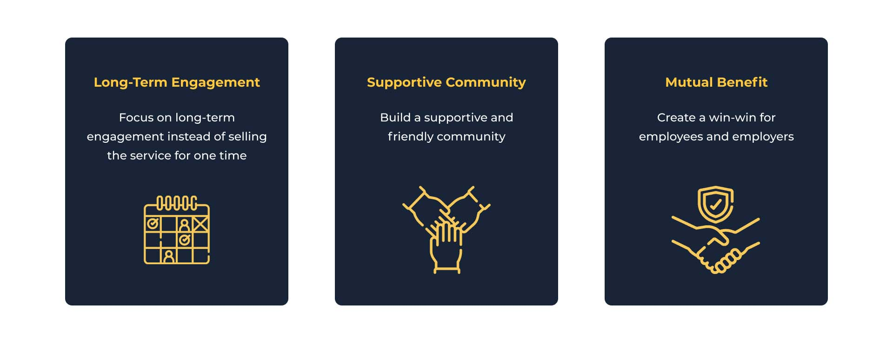
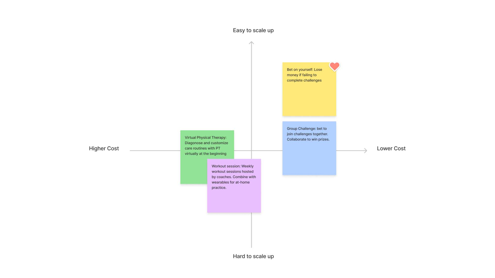
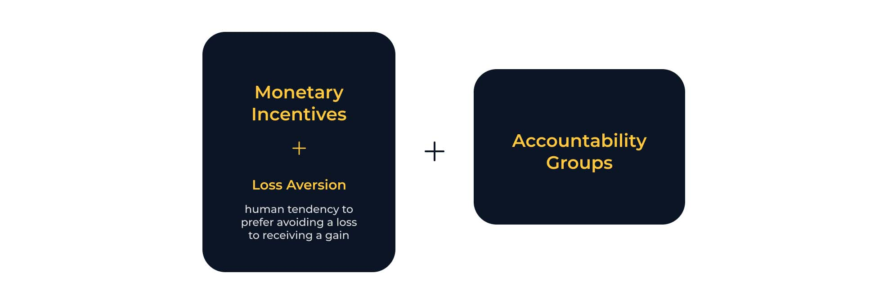
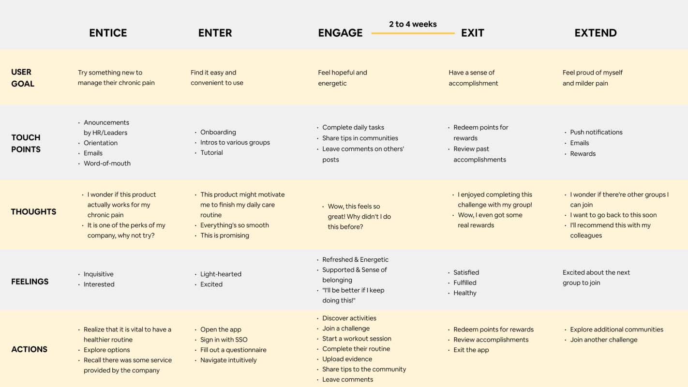
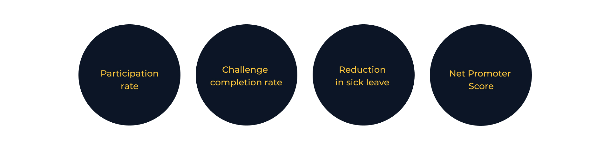

TOOGETHER
Product Design · 2021
OVERVIEW
As a complex and incurable disease, chronic pain is the leading contributor to sick leaves at the workplace. How might we help U.S. workers who have chronic pain complete their care routine? My team worked with Sean Ferry, our sponsor at Johnson & Johnson to tackle this problem in 15 weeks. We designed Toogether, a mobile app for companies to motivate their employees to manage chronic pain, by building supportive communities and turning care routines into fun daily activities.
Achievement: Winner of Strategic Innovation in Product/Service Design Case 2021
MY CONTRIBUTIONS
- Identified user needs and opportunities by conducting secondary research, 10 user interviews, and 3 expert interviews.
- Conceptualized new user behaviors through storyboards and user journey maps.
- Designed user flows, wireframes and interactive mockups.
- Pitched the design solution and produced a product concept video.
DURATION
15 Weeks
MY ROLE
Product Designer
TEAM
3 Product Designers
(Young Kim, Yazhen Zhang)
TOOLS
Figma
FigJam
ProtoPie
Adobe After Effects

Define the problem
Chronic pain severely impacts both individuals and businesses
“How might we enable those that manage chronic pain to increase compliance in their care routine?” We received this challenge from our sponsor. The challenge statement was broad, as chronic pain impacted a wide range of demographics. We hoped to narrow down the scope. Through desk research, we gained a deeper understanding of scientific facts about chronic pain and found that chronic pain associated with work caused severe issues and was put in the spotlight these years.

We sensed great business opportunities in this area and decided to target on U.S. workers who have chronic pain. Below is our updated challenge statement.

Secondary research
Facts about chronic pain
We carried out more comprehensive research on chronic pain in the aspects of science, sociology, economics, and technology. Here is a summary of what we found.
- Non-medical and non-surgical treatments are preferable, such as structured exercise, cognitive behavioral therapy, and yoga. They avoid the risk of drug addiction and prevent severe pain that requires surgeries.
- People with chronic pain are three times more likely to have depression and anxiety.
- Chronic back pain costs employers almost $1,700 per employee every year due to loss of productivity, equating to around $230 billion to businesses across the nation.
User Interview
Conducting 10 semi-direct user interviews
Helping users visualize feelings with abstract images: Since it was hard for users to describe how they felt about their pain, both physically and mentally, we showed them a group of abstract images and asked them to choose images that best represent their feeling and explain why. This method visualized abstract feelings and inspired users to speak more.

Synthesizing interview notes with color codes: We applied color codes to categorize users' responses into Say, Think, Do, Feel, Attention Catching, and Issue. This method enabled us to see beyond what they said to understand their behaviors and minds.

Connecting dots using affinity diagrams: We created an affinity diagram to synthesize primary and secondary research, by grouping similar findings.

User Interview Findings
What we learned from users?
- Instead of feeling anxious about their chronic pain, most people have been used to their pain after years.
- Most of them know the right ways of managing their pain (doing physical exercises, taking breaks frequently while working, having physical therapy regularly, etc.), but they lack motivation, especially when they are busy.
- A supportive atmosphere at work and accountability partners are helpful for chronic pain management.

Expert Interview
Current challenges of corporate wellness programs

We interviewed three experts to understand the challenges faced by workplace wellness programs and identified opportunities in the market. Here's what we learned from them.
- More companies are welling to adopt wellness programs.
- While most mid-to-large companies provide wellness programs to their employees, engagement in those programs is lower than 25%. Internal marketing is the biggest challenge even for Johnson & Johnson, the leader of workplace wellness.
- Reduction in sick leaves is the key measure of program success.
Design Principles
Developing three design principles
Based on our research findings, we developed three design principles to guide us through the design process. We believed that, by following the principles, we would create solutions that meet both user and business needs.
Design Strategy
Changing user behaviors by increasing motivation and feasibility
The first diagram shows the current user behavior. Users normally don't take their chronic pain seriously until the pain gets unbearable. Then, they become aware of the importance of daily exercise and healthy working and living habits, but their motivation goes up and down, which keeps them from sticking to the care routine. When their pain gets better, the motivation goes all the way down, and they abandon the healthy routine.
How do we change user behavior? There are two factors of behavior change, motivation and feasibility. Higher motivation and higher feasibility lead to the success of behavior change. We aim to help users maintain high motivation through social and financial incentives and lower the activation threshold by increasing the feasibility of care routines.

Ideation
Applying monetary incentives and accountability groups
We came up with some solutions individually and came together to synthesize them into four ideas. To determine which direction to move forward with, we mapped them to a 2x2 matrix to see which one would be easy to scale up and have a low cost in comparison. The idea we chose was to increase users' motivation by gamifying their tedious care routines.
Our solution is a combination of monetary incentives and accountability groups. Specifically, based on chronic pain conditions, users join different accountability groups and take on corresponding challenges to complete daily health activities with their colleagues. Each challenge lasts for 2-4 weeks. They bet tokens when they join a group and earn back the bet if they complete the challenge
User journey
5Es user journey map
We created a 5Es journey map (entice, enter, engage, exit, and extend) to specify users' goals, actions and feelings at different stages of their experience.
User testing
Early testing with storyboards
We created a storyboard and presented it to four users to check if our solution appealed to them. They expressed disapproval of having employees bet their own money to join challenges and expected employers to pay more for employees' wellness. They were also concerned about privacy. Therefore, we decided to have employers pay their employees tokens to join challenges (employers would be willing to pay more as long as the ROI is positive) and anonymize users in community forums.

Design
User flow

Design
Wireframe

Final output
Hi-fi prototypes and feature highlights

Next steps
How to measure success
If the product were to be launched, we hoped to measure the success based on the participation rate, challenge completion rate, reduction in sick leave, and net promotor score. Those factors would be the direct indicators of how well our product achieved user and business goals.
Deployment
Action plan and business model
Our target clients are large-size U.S. companies (500+ employees). At the stealth stage, we will develop our MVP and start from 5,000 employees of Johnson & Johnson in six months. Leveraging a successful track record with Johnson & Johnson, we believe we will be able to grow our business exponentially. In order to achieve the growth, we need a total investment of $3M, starting from $330K in the stealth stage.

Reflection
Learn from users and stay objective
The design process was a learning process. From knowing nothing about chronic pain to becoming more knowledgeable than the average, I constantly learned from online resources, people who manage chronic pain, and experts of wellness programs.
"Don't fall in love with your first design." I heard this advice many times, but putting it into action was harder than I thought. We had disagreements sometimes when deciding on design solutions. It was hard to abandon our own ideas. Eventually, we settled our arguments by testing concepts with users and researching. It was vital to stay objective and design with users instead of letting self-consciousness drive the design process.